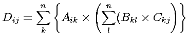

OverviewUsually, various simulators such as DynamicsSimulator are used as the CORBA server, but also can be used as a library in OpenHRP3. Here, we will explain how to use it. Loading modelloadBodyFromModelLoader () is used to load model. This receives model URL and command line arguments, and loads model using ModelLoader server. BodyPtr body = loadBodyFromModelLoader(url, argc, argv); loadBodyFromModelLoader () returns a pointer to Body class as the return values and the type of this return value is BodyPtr. The contents represent the structure of robots as tree structure as follows: Body + Link In Body, robot information and joint list such as model name are contained. There are three ways to retrieve their joints. How to retrieve by Joint node nameYou can retrieve joints that node indicates by passing the node name to the method link of Body class. Below is an example of retrieving right elbow of "sample.wrl":
Link* link = body->link("RARM_ELBOW");
How to retrieve by jointId
You can retrieve joints with jointId by passing jointId to joint method. Link* link = body->joint(1);How to retrieve by linkId While jointId is an ID in model VRML, linkId is an ID by tree search order of model data. Therefore joints which have no jointId in VRML also have linkId. Link* link = body->link(1); You can retrieve a joint class Link using one of the ways above. For example, we show a program to display all joint angles.
for (int i=0; i<body->numLinks(); i++) {
Link* link = body->link(i);
cout << link->name << " : " << link->q << endl;
}
Online ViewerOnline Viewer is a function which can display models via CORBA in "3DView" pane of GrxUI. When used by model calculation libraries, use OnlineViewerClient class. Here is a concrete way to use.
OnlineViewerClient olv;
try {
// initialize
olv.init(argc, argv);
// load
olv.load( body->modelName.c_str(), url);
olv.clearLog();
} catch (CORBA::SystemException& ex) {
cerr << "Failed to connect GrxUI." << endl;
return 1;
}
At first, pass command line arguments to init method for initialization. Next specify model name and URL, and load the model. Here assuming the model has been loaded in body by loadBodyFromModelLoader() on ahead, we get the name by Body::modelName. At last, clear the log. After initialization, update the contents to display. Do this by copying data retrieved through Body-Link structure to WorldState. The next snippet of code presupposes a sample humanoid has been loaded in a library/OnlineViewer.
// create WorldState
WorldState world;
world.characterPositions.length(1);
// CharacterPosition for SampleRobot
world.collisions.length(0);
CharacterPosition& robot = world.characterPositions[0];
robot.characterName = CORBA::string_dup(body->modelName);
world.time = 0;
// copy Link to WorldState
int n = body->numLinks();
robot.linkPositions.length(n);
for (int i=0; i<n; i++) {
Link* link = body->link(i);
setVector3(link->p, robot.linkPositions[i].p);
setMatrix33ToRowMajorArray(link->R, robot.linkPositions[i].R);
}
// Update
olv.update(world);
Forward Kinematics CalculationEdit the member q of Link class which represents a joint angle, and invokes Body class::calcForwardKinematics(), then the value is calculated. For example, to calculate a posture rotating 90 degrees at right elbow, write code like this:
Link* elbow = body->link("RARM_ELBOW");
elbow->q += M_PI/2;
body->calcForwardKinematics();
Inverse Kinematics CalculationSteps like this follow:
Link* waist = body->link("WAIST");
Link* ankle = body->link("RLEG_ANKLE_R");
JointPathPtr path = body->getJointPath(waist, ankle);
Set up a position vector and a rotation matrix of the destination link, and perform inverse kinematics calculation. // move the ankle joint up linearly vector3 p = ankle->p; p(2) += 0.01; matrix33 R = identity<matrix33>(); // inverse kinematics calculation path->calcInverseKinematics(p, mat) This sets up a set of joints included in the path to make the ankle joint reside target position/posture. SamplesThe next program moves a leg by inverse kinematics and shows its process in OnlineViewer. Source code
#include <stdio.h>
#include <string>
#include "hrpModelHeaders.h"
#include "OnlineViewerClient.h"
using namespace std;
using namespace OpenHRP;
enum {X, Y, Z};
#define deg2rad(x) (M_PI/180*(x))
int
main(int argc, char* argv[])
{
int i;
string url = "file://";
// specify the URL of the model with -url
for(i=0; i < argc; i++){
if( strcmp(argv[i], "-url") == 0 && i+1 < argc) url += argv[i+1];
}
// load the model
BodyPtr body = loadBodyFromModelLoader(url.c_str(), argc, argv);
if(body == NULL){
cerr << "ModelLoader: " << url << " cannot be loaded" << endl;
return 0;
}
body->calcForwardKinematics();
// Set up OnlineViewer
OnlineViewerClient olv;
try {
olv.init(argc, argv);
olv.load( body->modelName.c_str(), url.c_str());
olv.clearLog();
} catch (CORBA::SystemException& ex) {
cerr << "Failed to connect GrxUI." << endl;
return 1;
}
// bend it firstly to avoid singularity
body->joint(1)->q = deg2rad(-10);
body->joint(3)->q = deg2rad(20);
body->joint(4)->q = deg2rad(-10);
body->calcForwardKinematics();
// set up a path from its waist to its ankle
Link* waist = body->link("WAIST");
Link* ankle = body->link("RLEG_ANKLE_R");
JointPathPtr path = body->getJointPath(waist, ankle);
// create WorldState
WorldState world;
world.characterPositions.length(1);
// CharacterPosition for SampleRobot
world.collisions.length(0);
CharacterPosition& robot = world.characterPositions[0];
robot.characterName = CORBA::string_dup("SampleRobot");
// time is 0
world.time=0;
while (1) {
// forward the time
world.time+=0.001;
// move a little
vector3 p = ankle->p;
matrix33 R = ankle->R;
p(2) += 0.01;
// stop when fail to calculate inverse kinematics
if (!path->calcInverseKinematics(p, R)) {
break;
}
// copy Link to WorldState
int n = body->numLinks();
robot.linkPositions.length(n);
for (int i=0; i<n; i++) {
Link* link = body->link(i);
setVector3(link->p, robot.linkPositions[i].p);
setMatrix33ToRowMajorArray(link->R, robot.linkPositions[i].R);
}
// update OnlineViewer
olv.update(world);
}
}
CompileLinuxCreate a Makefile. Here, we name the program move_ankle. all: move_ankle # specify the location of top directory of OpenHRP TOP = ../../../ include $(TOP)Make.rules CXX_FLAGS += -I../../corba -I$(BOOST_INC_DIR) -I$(TVMET_INC_DIR) \ -I$(DYNAMICSSIMULATOR)/server -DTVMET_OPTIMIZE -Ipathlib/include -I$(GRXUI)/corba DYN_FLAGS = -I$(DYNAMICSSIMULATOR)/server -I$(BOOST_INC_DIR) -I$(TVMET_INC_DIR) \ -I$(JDK_DIR)/include -I$(JDK_DIR)/include/$(ARCH) -I$(DYNAMICSSIMULATOR)/corba DYN_LIBS = $(LPOPT)$(DYNAMICSSIMULATOR)/server $(LIBOPT)hrpModel3$(LIBSFX) \ $(DYNAMICSSIMULATOR)/server/convCORBAUtil.o $(DYNAMICSSIMULATOR)/server/ModelLoaderUtil.o \ $(DYNAMICSSIMULATOR)/corba/OpenHRPCommon.o $(DYNAMICSSIMULATOR)/corba/CollisionDetector.o \ $(DYNAMICSSIMULATOR)/corba/DynamicsSimulator.o $(DYNAMICSSIMULATOR)/corba/ViewSimulator.o \ $(DYNAMICSSIMULATOR)/corba/ModelLoader.o $(GRXUI)/corba/OnlineViewerClient.o \ $(GRXUI)/corba/OnlineViewer.o %.o: %.cpp $(CXX) $(CXX_FLAGS) -g -fno-inline $(DYN_FLAGS) $(OBJOPT)$@ $< move_ankle : move_ankle.o $(LINK) $(OUTOPT) $@ $^ $(LINK_FLAGS) $(OB_LIBS) $(DYN_LIBS) clean: rm *.o move_ankle Write this content in Makefile, and compile. % make WindowsCreate a new empty project. In Property Manager, add OpenHRP_user_release(debug).vsprops, a property sheet in home directory of OpenHRP. Perform build from its build menu. Please refer to move_ankle.sln. under sample\move_ankle. ExecutionLinuxExecution is performed via a shell script. Write the next lines in move_ankle.sh. #!/bin/sh # specify the location of top directory of OpenHRP export TOP=../../.. . $TOP/bin/unix/config.sh export LD_LIBRARY_PATH=.:$OB_DIR/lib:$JDK_DIR/jre/lib/i386/client:$OPENHRPHOME/DynamicsSimulator/server export MODEL_URL=$OPENHRPHOME/etc/sample.wrl ./move_ankle $NS_OPT -url $MODEL_URL Append execution attributes. chmod +x move_ankle.sh Run it. Please make sure GrxUI has started, OnlineViewer and others are registered in a name service. ./move_ankle.sh WindowsExecution is performed via a batch file. Write the next lines in move_ankle.bat. Specify the location of top directory of OpenHRP to TOP variable. set TOP=..\.. call %TOP%\bin\dos\config.bat move_ankle %NS_OPT% -url /%OPENHRPHOME%etc\sample.wrl Run it. Please make sure GrxUI has started, OnlineViewer and others are registered in a name service. move_ankle.bat Using dynamics serversYou can perform forward/inverse kinematics calculation, using model calculation libraries we have described. However, when you want to do advanced calculations such as collision check and dynamics calculations, you need to use a dynamics server directly. Here we will explain how to write a program which moves both hands closely by inverse kinematics and judges whether they touch each other by collision check. Getting serversSee CORBA initialization and getting various servers in Scheduler creation manual to get various servers: NamingService, ModelLoader, OnlineViewer, DynamicsSimulato, and set them up initially. However, for initial configuration of DynamicsSimulator, please specify the next initial posture and collision check pair. Initial postureSpecify the next array as its initial posture.
double init_pos[] = {0.00E+00, -3.60E-02, 0, 7.85E-02, -4.25E-02, 0.00E+00,
1.75E-01, -3.49E-03, 0, -1.57E+00, 0.00E+00, 0.00E+00,
0.00E+00, 0.00E+00, -3.60E-02, 0, 7.85E-02, -4.25E-02,
0.00E+00, 1.75E-01, 3.49E-03, 0, -1.57E+00, 0.00E+00,
0.00E+00, 0.00E+00, 0, 0, 0};
Set this array init_pos to its joint angle.
DblSequence q;
q.length(DOF);
for (int i=0; i<DOF; i++) {
q[i] = init_pos[i];
}
dynamicsSimulator->setCharacterAllLinkData("robot", DynamicsSimulator::JOINT_VALUE, q);
Setting of collision check pair
DblSequence6 dc, sc;
dc.length(0);
sc.length(0);
dynamicsSimulator->registerCollisionCheckPair
("robot",
"RARM_WRIST_R",
"robot",
"LARM_WRIST_R",
0.5,
0.5,
dc,
sc);
This indicates to perform collision check between the joints of both hands. Preparation of inverse kinematics calculationRecord its initial posture and move a little at once. First, prepare initial postures of both hands. Also, prepare the variable dp which represents how much to move.
double RARM_p[] = {0.197403, -0.210919, 0.93732};
double RARM_R[] = {0.174891, -0.000607636, -0.984588,
0.00348999, 0.999994, 2.77917e-06,
0.984582, -0.00343669, 0.174892};
double LARM_p[] = {0.197403, 0.210919, 0.93732};
double LARM_R[] = {0.174891, 0.000607636, -0.984588,
-0.00348999, 0.999994, -2.77917e-06,
0.984582, 0.00343669, 0.174892};
double dp;
Simulation loopSimulation loop executes the following three processings. Inverse kinematics calculationMove one step to close both hands.
LinkPosition link;
link.p[0] = RARM_p[0];
link.p[1] = RARM_p[1] + dp;
link.p[2] = RARM_p[2];
for (int i=0; i<9; i++)
link.R[i] = RARM_R[i];
dynamicsSimulator->calcCharacterInverseKinematics(CORBA::string_dup("robot"),
CORBA::string_dup("CHEST"),
CORBA::string_dup("RARM_WRIST_R"),
link);
link.p[0] = LARM_p[0];
link.p[1] = LARM_p[1] - dp;
link.p[2] = LARM_p[2];
for (int i=0; i<9; i++)
link.R[i] = LARM_R[i];
dynamicsSimulator->calcCharacterInverseKinematics(CORBA::string_dup("robot"),
CORBA::string_dup("CHEST"),
CORBA::string_dup("LARM_WRIST_R"),
link);
dynamicsSimulator->calcWorldForwardKinematics();
dp += 0.001;
Updating OnlineViewerUpdate display contents in OnlineViewer. It is different from a scheduler that updates time manually because time is not changed. dynamicsSimulator->getWorldState(state); state->time = dp*10; onlineViewer->update(state); Collision CheckWhen there are one or more collision points for the pair of joints which we have registered before, we quit the simulation loop.
if (state->collisions.length() > 0) {
if (state->collisions[0].points.length() > 0) {
break;
}
}
NoticeAliasAlias is when the assigned variable is also used in the right expression, so the value of the valuable causes interference during calculation. Since interference make the result inappropriate. See these links about tvmet, ublas, and their implementation. By default, tvmet does not assume interference, and it performs well. You have to care interference enough. When interference occurs, introduce a temporary variable, or wrap alias() on the assigned variable. On the other hand, ublas assumes interference by default, there is not such a problem in general. However its performance gets lost in a case where there is no interference. In such a case, wrap noalis() on the assigned variable not to copy uselessly. Expression TemplateExpression Template is to record a expression itself when the expression is given, not to calculate then, deferring to calculate until the calculation is needed. For example, an expression, a*b+c is recorded as a template like this: Add< Multiple < a , b > , c > You must care an order to calculate. Supposing n dimension square matrixes A, B, C, D, consider to assign multiply A, B, C to D. matrix You can consider these two differences. First the second statement does not store an intermediate value in a temporary area, but the first statement stores B*C and they do multiply. The first statement calculates a intermediate value and store the result in a temporary area, and again calculate a final result, so there are 2 matrix calculation and 2n^3 multiplies. The second does not store a intermediate value and actual calculation performs when the final result is stored in D, so its calculation goes like this:  Quantity of this multiply is calculated for one element of D in (n+1)n, but D has n dimension and the number of its elements is n^2, so it needs (n+1)n^3. Therefore these statements have different orders, and the second is slower than the first. When using Expression Template, please notice such a difference of orders. |